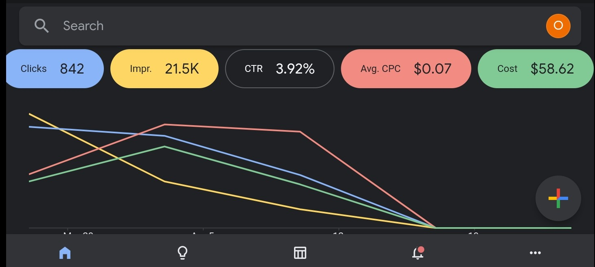
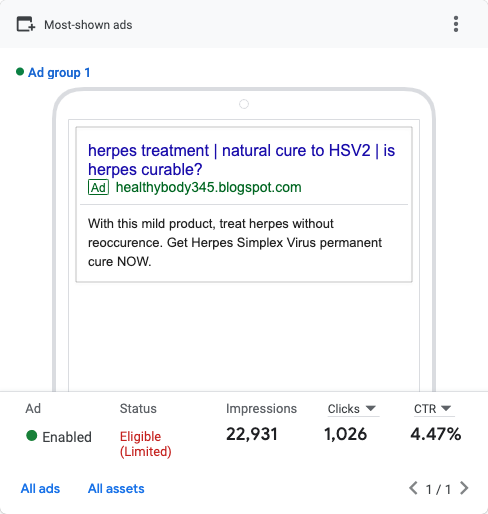
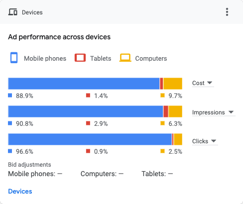

Google Ads Portfolio - Omonije Oluwatosin S.
About Me
Hello! I’m Omonije Oluwatosin S., a Google Ads expert with over three years of experience in search, YouTube, and display ads. Currently, I’m a 400-level student in Materials and Metallurgical Engineering at FUTA, combining my engineering skills with a passion for digital marketing to drive outstanding ad performance.
Client Success Stories
1. Norland Pharmaceutical
Role: Ongoing Google Ads Specialist
- Achieved high CTR and conversion rates through strategic search ad placements.
- Expanded brand visibility through YouTube and display ads, engaging a wider audience.
- Aligned campaigns with Norland’s goals for cost-effective growth and quality lead generation.
2. Daily Medics
Role: Contract-Based Google Ads Manager (April 2023 - April 2024)
- Created campaigns with high impression counts and low CPC, maximizing reach.
- Maintained moderate conversion rates with cost-efficient strategies.
- Provided data-driven reports, showcasing ROI and aligning with expectations.
Why Choose Me?
Choosing me means partnering with a Google Ads manager who’s dedicated to your success. I bring a unique blend of technical expertise and industry knowledge, ensuring your campaigns perform effectively and maximize ROI.
Portfolio
Here are some of my past work:



Here is why you should choose google ads for your business